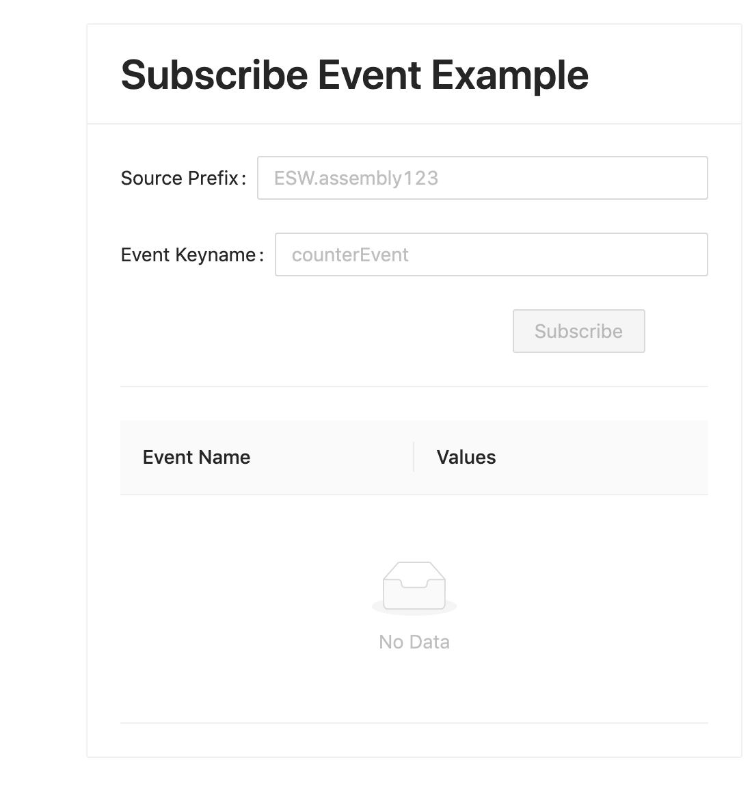

Adding Subscribing An Event Example
In this use case, we want to Subscribe to an event which will be published by an Backend Component. We will be using EventService to publish a SystemEvent(counterEvent) every 2 seconds inside esw-shell utility.
Visit here to learn more about events.
Add Subscribe Event Component
Assuming that you have followed atleast the basic flow, we can go further and add subscribing to an event feature in our UI.
Add SubscribeEvent.tsx file in src/components folder.
SubscribeEvent component looks like following:
You can refer the source code of the completed application at any point in the course of this tutorial. You can find it here
- Typescript
-
source
export const SubscribeEvent = ({ _eventService }: { _eventService?: EventService }): JSX.Element => { const { auth } = useAuth() const authData = { tokenFactory: () => auth?.token() } return ( <Card style={{ maxWidth: '30rem', maxHeight: '45rem' }} title={ <Typography.Title level={2}>Subscribe Event Example</Typography.Title> }> </Card> ) }
We need to add form element to take input from the user. This Form includes two input fields
- SourcePrefix - A free text input box for putting Source Prefix of the desired subscription.
- Event KeyName - A free text input box for putting Event’s keyname of the desired subscription.
- Subscribe - A button for creating subscription. It gets toggled to
UnSubscribeon success.
Add the following in the SubscribeEvent component
- Typescript
-
source
export const SubscribeEvent = ({ _eventService }: { _eventService?: EventService }): JSX.Element => { const { auth } = useAuth() const authData = { tokenFactory: () => auth?.token() } return ( <Card style={{ maxWidth: '30rem', maxHeight: '45rem' }} title={ <Typography.Title level={2}>Subscribe Event Example</Typography.Title> }> <Form onFinish={() => { subscription ? unSubscribe() : subscribe() }}> <Form.Item label='Source Prefix'> <Input role='SourcePrefix' value={prefix} placeholder='ESW.assembly123' onChange={(e) => setPrefix(e.target.value)} /> </Form.Item> <Form.Item label='Event Keyname'> <Input role='keyName' value={keyName} placeholder='counterEvent' onChange={(e) => setKeyName(e.target.value)} /> </Form.Item> <Form.Item wrapperCol={{ offset: 16, span: 16 }}> <Button role='subscribe' onClick={() => (subscription ? unSubscribe() : subscribe())} type='primary' disabled={keyName === ''}> {subscription ? 'UnSubscribe' : 'Subscribe'} </Button> </Form.Item> </Form> </Card> ) }
Add the following react states to hold the information of their corresponding user inputs.
- Typescript
-
source
export const SubscribeEvent = ({ _eventService }: { _eventService?: EventService }): JSX.Element => { const { auth } = useAuth() const authData = { tokenFactory: () => auth?.token() } const [prefix, setPrefix] = useState('') const [keyName, setKeyName] = useState('') const [events, setEvents] = useState<Event[]>([]) const [subscription, setSubscription] = useState<Subscription>() return ( <Card style={{ maxWidth: '30rem', maxHeight: '45rem' }} title={ <Typography.Title level={2}>Subscribe Event Example</Typography.Title> }> <Form onFinish={() => { subscription ? unSubscribe() : subscribe() }}> <Form.Item label='Source Prefix'> <Input role='SourcePrefix' value={prefix} placeholder='ESW.assembly123' onChange={(e) => setPrefix(e.target.value)} /> </Form.Item> <Form.Item label='Event Keyname'> <Input role='keyName' value={keyName} placeholder='counterEvent' onChange={(e) => setKeyName(e.target.value)} /> </Form.Item> <Form.Item wrapperCol={{ offset: 16, span: 16 }}> <Button role='subscribe' onClick={() => (subscription ? unSubscribe() : subscribe())} type='primary' disabled={keyName === ''}> {subscription ? 'UnSubscribe' : 'Subscribe'} </Button> </Form.Item> </Form> </Card> ) }
Now, lets add subscribe method which gets called onFinish of the form component.
This method makes use of event service typescript client which sits on top of the gateway server EventServer routes. In this method, We call subscribe api of eventService to create subscription in a callback based fashion. the callback named handleEvent gets triggered when ever an event is recieved on that subscription.
- Typescript
-
source
const [events, setEvents] = useState<Event[]>([]) const [subscription, setSubscription] = useState<Subscription>() const handleEvent = (event: Event) => { if (event.eventId !== '-1') { setEvents((events) => [...events, event]) } else { message.error(`Event: ${event.eventName.name} is invalid`) } } const unSubscribe = () => { subscription?.cancel() setSubscription(undefined) } const subscribe = async () => { const eventServices = _eventService ? _eventService : await EventService(authData) const subscription = eventServices.subscribe( new Set([ new EventKey(Prefix.fromString(prefix), new EventName(keyName)) ]), 1 )(handleEvent) setSubscription(subscription) } return ( <Card style={{ maxWidth: '30rem', maxHeight: '45rem' }}
Now we have fully added the functionality of susbcribing to an event. all the events received on that subscription are added to list of events which is a react state. we can use this events react state to render event however we want to show them.
In this tutorial, we will make use of Table Antd component.
Lets add this final piece to our UI component below the Form component to visualize the recieved events.
- Typescript
-
source
export const SubscribeEvent = ({ _eventService }: { _eventService?: EventService }): JSX.Element => { const { auth } = useAuth() const authData = { tokenFactory: () => auth?.token() } const columns = [ { title: 'Event Name', dataIndex: 'eventName', render: (eventName: EventName) => eventName.name }, { title: 'Values', // eslint-disable-next-line react/display-name render: (_: string, event: Event) => { const counterParam = event.get(intKey('counter')) ?? { values: [] } return <span>{counterParam.values.join(',')}</span> } } ] return ( <Card style={{ maxWidth: '30rem', maxHeight: '45rem' }} title={ <Typography.Title level={2}>Subscribe Event Example</Typography.Title> }> <Form onFinish={() => { subscription ? unSubscribe() : subscribe() }}> </Form> <Divider /> <Table scroll={{ y: 240 }} pagination={false} rowKey={(e) => e.eventId} dataSource={events} columns={columns} /> </Card> ) }
Also, Make sure to add appropriate imports to the file.
- Typescript
-
source
import { Event, EventKey, EventName, EventService, intKey, Prefix, Subscription } from '@tmtsoftware/esw-ts' import { Button, Card, Divider, Form, Input, message, Table, Typography } from 'antd' import React, { useState } from 'react' import { useAuth } from '../hooks/useAuth'
Integrate SubscribeEvent Component
Finally, update Main.tsx to include SubscribeEvent component.
- Typescript
-
source
import { SubscribeEvent } from './SubscribeEvent' export const Main = (): JSX.Element => { const { auth } = useAuth() if (!auth) return <div>Loading</div> const isAuthenticated = auth?.isAuthenticated() ?? false return isAuthenticated ? ( <div style={{ display: 'flex', placeContent: 'space-around', paddingTop: '2rem' }}> <SubmitCommand /> <SubscribeEvent /> </div> ) : ( <Login /> ) }
UI should render the following view at this moment.

Fill in the values for all input fields and subscribe.
Source Prefix : ESW.assembly123
Event KeyName : counterEvent
That’s all we needed to do for adding an Subscribe Event feature!!!
Not, let’s simulate an backend publishing some events and see them reflecting on UI in real-time.
Publish events using esw-shell
Before moving ahead, if you have not started backend services. Then let’s start backend services by following this steps.
Now, lets start esw-shell utility. It starts an ammonite repl with basic api’s for us to publish events.
cs install esw-shell:0.3.0-RC1
esw-shell start
@ // you are inside ammonite repl now
Visit here to learn more about the esw-shell utility.
We are using eventService’s defaultPublisher API to publish events.
@ val counter = 0
@ def eventGenerator = Option{
counter+=1
SystemEvent(Prefix("ESW.assembly123"), EventName("counterEvent"), Set(IntKey.make("counter").set(counter)))
}
@ eventService.defaultPublisher.publish(eventGenerator, 2.seconds)
This should start publishing events every 2 seconds from the source prefix ESW.assembly123.